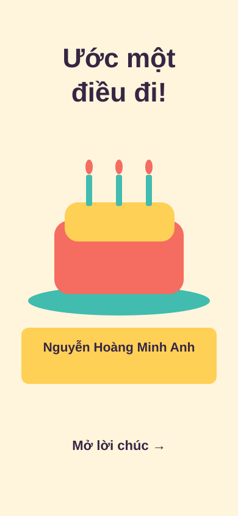
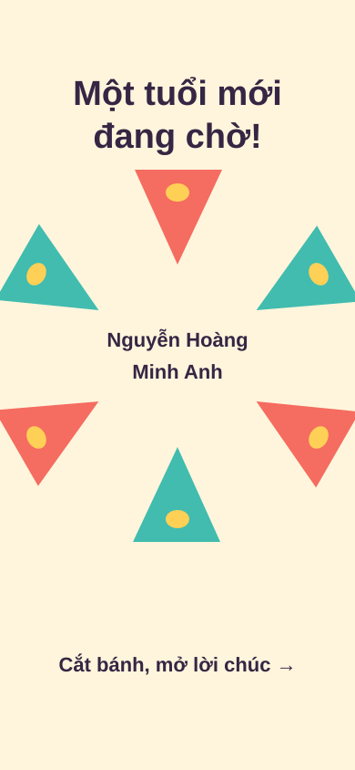
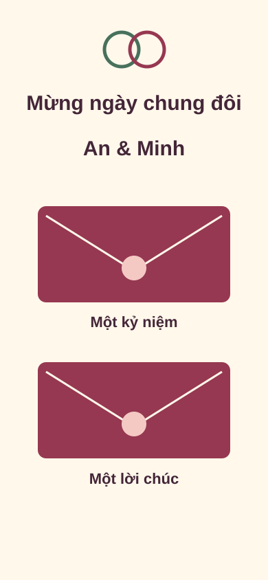
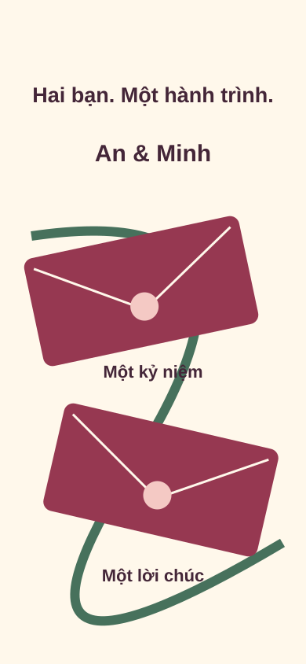
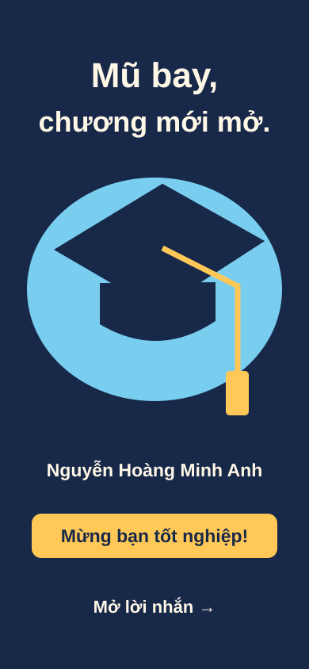
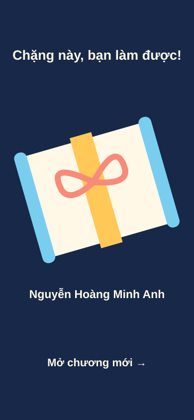

Phác thảo vector 390 × 844 · Tự rà thiết kế, chưa thử nhận diện với người tham gia.
Bánh vừa đặt trước bạn

Bữa tiệc nhìn từ trên

Hai thư trên bàn tiệc

Ruy băng nối hai thư

Áp phích tung mũ

Tấm bằng nhìn từ trên

A1 · Bánh và nến rõ khi thu nhỏ, dải giấy dành riêng cho tên dài.
B1 · Hai phong bì có cùng kích thước và trục đọc, thể hiện hai lựa chọn ngang nhau.
C1 · Mũ và tua nhận ra tốt nghiệp khi che chữ, đường chéo tạo sức bật khác hai bìa còn lại.
Cần người dùng đánh giá tiếp: ghép bìa với dịp khi che tiêu đề; mục tiêu ít nhất 2/3 người nhận đúng từng dịp.